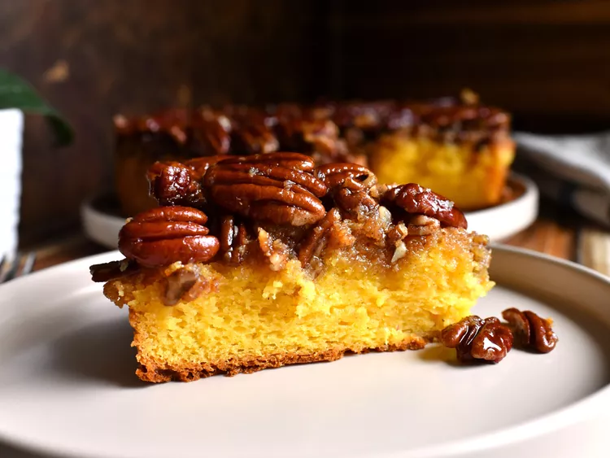

Pecan Pie Upside Down Cake

Ingredients
Original recipe (1X) yields 12 servings
- nonstick cooking spray
- ½ cup butter
- ½ cup brown sugar
- ⅓ cup light corn syrup
- 1 teaspoon vanilla paste
- ½ teaspoon ground cinnamon
- ¼ teaspoon salt
- 1 ½ cups pecan halves
Cake Batter
- 1 (15.5 ounce) box butter golden cake mix (such as Duncan Hines®)
- 1 (3.5 ounce) package instant vanilla pudding
- 3 large eggs, at room temperature
- 1 cup milk, at room temperature
- ½ cup oil
- ¼ cup sour cream
- 1 teaspoon vanilla paste
Directions
- Preheat the oven to 350 degrees F (175 degrees C). Spray a 10-inch cake pan with nonstick cooking spray. Line with parchment paper and spray again. Set aside.
- Place butter, brown sugar, corn syrup, vanilla paste, cinnamon, and salt in a saucepan. Bring to a boil, stirring constantly. Add pecans and stir until pecans are coated in mixture. Pour into prepared cake pan and set aside
- For cake batter, place cake mix, eggs, pudding mix, milk, oil, sour cream, and vanilla in a large bowl. Using an electric mixer, beat for 3 minutes. Pour over pecan mixture.
- Bake in the preheated oven until a skewer inserted in center comes out clean, 40 to 50 minutes.
- Run a butter knife around outside of cake to release from pan. Cool on a wire rack for 10 minutes. Carefully flip cake onto a serving platter and cool completely before slicing.
Return to top
Return to main page